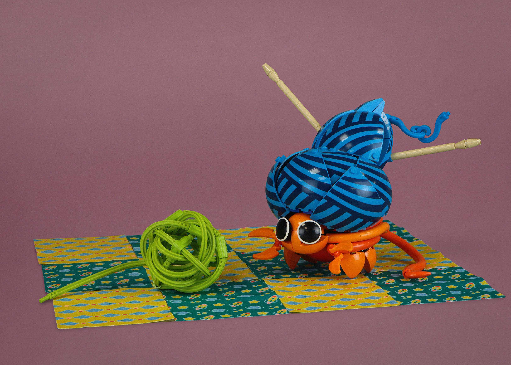
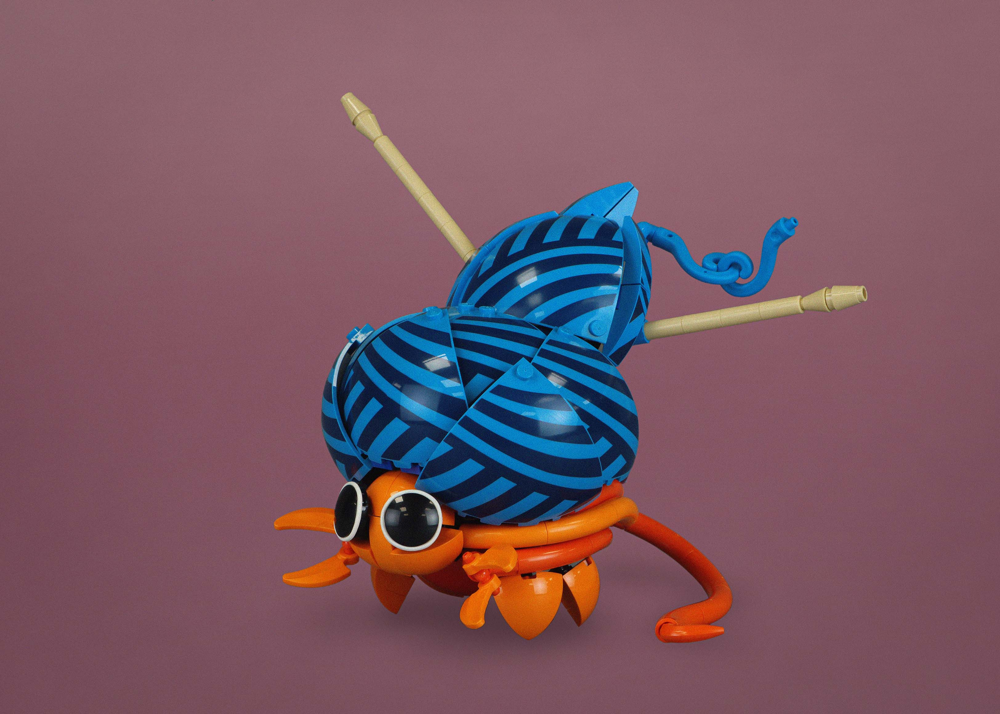
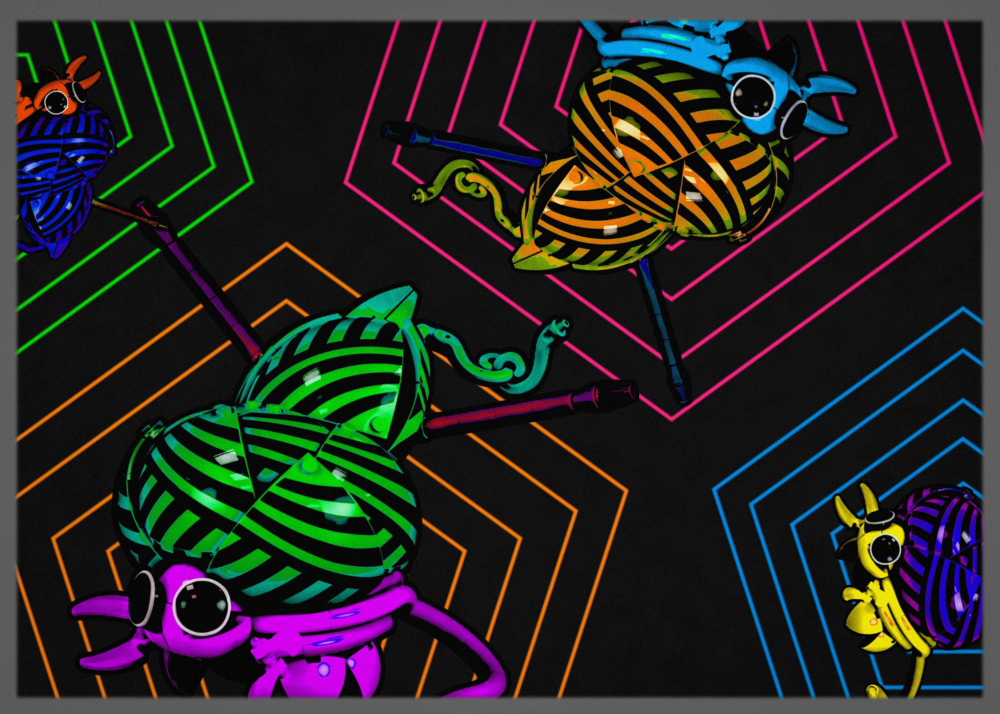

oscar

This was a pretty quick build for crab month. With the release of the F1 helmets, many interesting prints were introduced. I had been messing around with parts spamming a few of these prints to see what patterns could be made as well as shapes that could be achieved. A lot of the prints are on smaller pieces with hard edges (like curved slopes), but the domes had the most potentially to be moulded into an organic shape.
Originally, I intended to just make a shelled creature. However, as I had the build in the office, Chris pointed out that the F1 prints made it look like a yarn ball - and thus the idea of a yarn crab was born!

